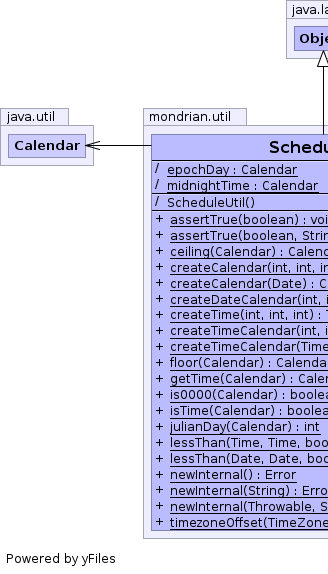
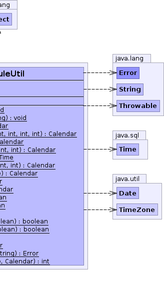

class ScheduleUtil extends Object
Schedule and supporting classes. |
 |
| Modifier and Type | Field and Description |
|---|---|
(package private) static Calendar |
epochDay |
(package private) static Calendar |
midnightTime |
| Constructor and Description |
|---|
ScheduleUtil() |
| Modifier and Type | Method and Description |
|---|---|
static void |
assertTrue(boolean b) |
static void |
assertTrue(boolean b,
String s) |
static Calendar |
ceiling(Calendar calendar)
Returns a calendar rounded up to the next midnight, unless it is already
midnight.
|
static Calendar |
createCalendar(Date date)
Creates a calendar in UTC, and initializes it to
date. |
static Calendar |
createCalendar(int year,
int month,
int day,
int hour,
int minute,
int second)
Creates a calendar in UTC, and initializes it to a given year, month,
day, hour, minute, second.
|
static Calendar |
createDateCalendar(int year,
int month,
int dayOfMonth)
Creates a calendar and sets it to a given year, month, date.
|
static Time |
createTime(int hour,
int minutes,
int second)
Creates a
Time |
static Calendar |
createTimeCalendar(int hours,
int minutes,
int seconds)
Creates a calendar and sets it to a given hours, minutes, seconds.
|
static Calendar |
createTimeCalendar(Time time)
Creates a calendar from a time.
|
static Calendar |
floor(Calendar calendar)
Returns a calendar rounded down to the previous midnight.
|
static Calendar |
getTime(Calendar calendar)
Extracts the time part of a date.
|
static boolean |
is0000(Calendar calendar) |
static boolean |
isTime(Calendar calendar) |
static int |
julianDay(Calendar calendar)
Returns the julian day number of a given date.
|
static boolean |
lessThan(Date d1,
Date d2,
boolean strict) |
static boolean |
lessThan(Time t1,
Time t2,
boolean strict) |
static Error |
newInternal() |
static Error |
newInternal(String s) |
static Error |
newInternal(Throwable e,
String s) |
static int |
timezoneOffset(TimeZone tz,
Calendar calendar)
Returns the offset from UTC in milliseconds in this timezone on a given
date.
|
static final Calendar midnightTime
ScheduleUtil()
public static void assertTrue(boolean b)
public static void assertTrue(boolean b, String s)
public static Error newInternal()
public static Error newInternal(Throwable e, String s)
public static Error newInternal(String s)
public static Calendar floor(Calendar calendar)
public static Calendar ceiling(Calendar calendar)
public static Calendar getTime(Calendar calendar)
public static Calendar createCalendar(Date date)
date.public static Calendar createCalendar(int year, int month, int day, int hour, int minute, int second)
public static Calendar createTimeCalendar(Time time)
public static Calendar createTimeCalendar(int hours, int minutes, int seconds)
public static Calendar createDateCalendar(int year, int month, int dayOfMonth)
public static Time createTime(int hour, int minutes, int second)
Timepublic static int julianDay(Calendar calendar)
public static int timezoneOffset(TimeZone tz, Calendar calendar)